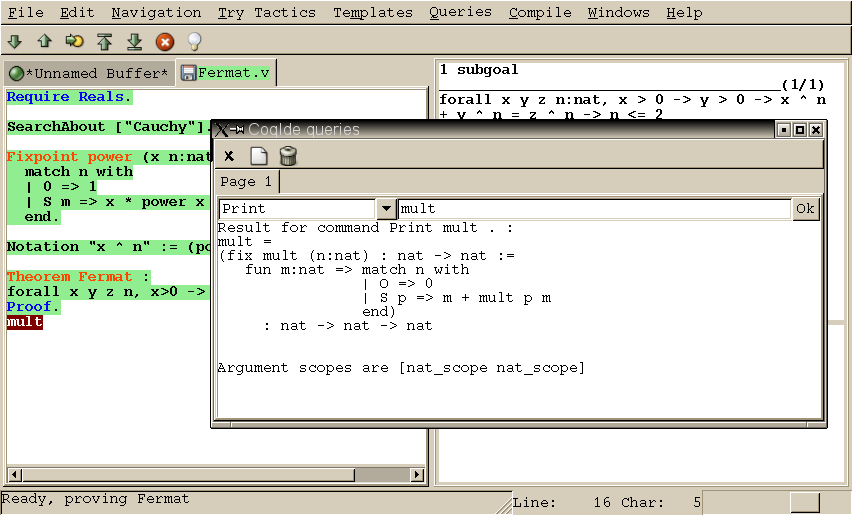

Chapter 16 Coq Integrated Development Environment
- 16.1 Managing files and buffers, basic edition
- 16.2 Interactive navigation into Coq scripts
- 16.3 Try tactics automatically
- 16.4 Proof folding
- 16.5 Vernacular commands, templates
- 16.6 Queries
- 16.7 Compilation
- 16.8 Customizations
- 16.9 Using Unicode symbols
The Coq Integrated Development Environment is a graphical tool, to be used as a user-friendly replacement to coqtop. Its main purpose is to allow the user to navigate forward and backward into a Coq vernacular file, executing corresponding commands or undoing them respectively.
CoqIDE is run by typing the command coqide on the command
line. Without argument, the main screen is displayed with an “unnamed
buffer”, and with a file name as argument, another buffer displaying
the contents of that file. Additionally, coqide accepts the same
options as coqtop, given in Chapter 14, the ones having
obviously no meaning for CoqIDE being ignored. Additionally, coqide accepts the option -enable-geoproof to enable the support for GeoProof 1.

Figure 16.1: CoqIDE main screen
A sample CoqIDE main screen, while navigating into a file
Fermat.v, is shown on Figure 16.1. At
the top is a menu bar, and a tool bar below it. The large window on
the left is displaying the various script buffers. The upper right
window is the goal window, where goals to
prove are displayed. The lower right window is the message window,
where various messages resulting from commands are displayed. At the
bottom is the status bar.
16.1 Managing files and buffers, basic edition
In the script window, you may open arbitrarily many buffers to edit. The File menu allows you to open files or create some, save them, print or export them into various formats. Among all these buffers, there is always one which is the current running buffer, whose name is displayed on a green background, which is the one where Coq commands are currently executed.
Buffers may be edited as in any text editor, and classical basic editing commands (Copy/Paste, …) are available in the Edit menu. CoqIDE offers only basic editing commands, so if you need more complex editing commands, you may launch your favorite text editor on the current buffer, using the Edit/External Editor menu.
16.2 Interactive navigation into Coq scripts
The running buffer is the one where navigation takes place. The toolbar proposes five basic commands for this. The first one, represented by a down arrow icon, is for going forward executing one command. If that command is successful, the part of the script that has been executed is displayed on a green background. If that command fails, the error message is displayed in the message window, and the location of the error is emphasized by a red underline.
On Figure 16.1, the running buffer is Fermat.v, all
commands until the Theorem have been already executed, and the
user tried to go forward executing Induction n. That command
failed because no such tactic exist (tactics are now in
lowercase…), and the wrong word is underlined.
Notice that the green part of the running buffer is not editable. If
you ever want to modify something you have to go backward using the up
arrow tool, or even better, put the cursor where you want to go back
and use the goto button. Unlike with coqtop, you
should never use Undo to go backward.
Two additional tool buttons exist, one to go directly to the end and one to go back to the beginning. If you try to go to the end, or in general to run several commands using the goto button, the execution will stop whenever an error is found.
If you ever try to execute a command which happens to run during a long time, and would like to abort it before its termination, you may use the interrupt button (the white cross on a red circle).
Finally, notice that these navigation buttons are also available in the menu, where their keyboard shortcuts are given.
16.3 Try tactics automatically
The menu Try Tactics provides some features for automatically trying to solve the current goal using simple tactics. If such a tactic succeeds in solving the goal, then its text is automatically inserted into the script. There is finally a combination of these tactics, called the proof wizard which will try each of them in turn. This wizard is also available as a tool button (the light bulb). The set of tactics tried by the wizard is customizable in the preferences.
These tactics are general ones, in particular they do not refer to particular hypotheses. You may also try specific tactics related to the goal or one of the hypotheses, by clicking with the right mouse button on the goal or the considered hypothesis. This is the “contextual menu on goals” feature, that may be disabled in the preferences if undesirable.
16.4 Proof folding
As your script grows bigger and bigger, it might be useful to hide the proofs of your theorems and lemmas.
This feature is toggled via the Hide entry of the Navigation menu. The proof shall be enclosed between Proof. and Qed., both with their final dots. The proof that shall be hidden or revealed is the first one whose beginning statement (such as Theorem) precedes the insertion cursor.
16.5 Vernacular commands, templates
The Templates menu allows using shortcuts to insert vernacular commands. This is a nice way to proceed if you are not sure of the spelling of the command you want.
Moreover, this menu offers some templates which will automatic insert a complex command like Fixpoint with a convenient shape for its arguments.
16.6 Queries

Figure 16.2: CoqIDE: the query window
We call query any vernacular command that do not change the
current state, such as Check, Search, etc. Those
commands are of course useless during compilation of a file, hence
should not be included in scripts. To run such commands without
writing them in the script, CoqIDE offers another input window
called the query window. This window can be displayed on
demand, either by using the Window menu, or directly using
shortcuts given in the Queries menu. Indeed, with CoqIDE
the simplest way to perform a Search on some identifier
is to select it using the mouse, and pressing F2. This will
both make appear the query window and run the Search in
it, displaying the result. Shortcuts F3 and F4 are for
Check and Print respectively.
Figure 16.2 displays the query window after selection
of the word “mult” in the script windows, and pressing F4 to
print its definition.
16.7 Compilation
The Compile menu offers direct commands to:
- compile the current buffer
- run a compilation using
make - go to the last compilation error
- create a
makefileusingcoq_makefile.
16.8 Customizations
You may customize your environment using menu Edit/Preferences. A new window will be displayed, with several customization sections presented as a notebook.
The first section is for selecting the text font used for scripts, goal and message windows.
The second section is devoted to file management: you may
configure automatic saving of files, by periodically saving the
contents into files named #f# for each opened file
f. You may also activate the revert feature: in case a
opened file is modified on the disk by a third party, CoqIDE may read
it again for you. Note that in the case you edited that same file, you
will be prompt to choose to either discard your changes or not. The
File charset encoding choice is described below in
Section 16.9.3
The Externals section allows customizing the external commands
for compilation, printing, web browsing. In the browser command, you
may use %s to denote the URL to open, for example: mozilla -remote "OpenURL(%s)".
The Tactics Wizard section allows defining the set of tactics
that should be tried, in sequence, to solve the current goal.
The last section is for miscellaneous boolean settings, such as the “contextual menu on goals” feature presented in Section 16.3.
Notice that these settings are saved in the file .coqiderc of
your home directory.
A gtk2 accelerator keymap is saved under the name .coqide.keys.
It is not recommanded to edit this file manually: to modify a given menu
shortcut, go to the corresponding menu item without releasing the
mouse button, press the key you want for the new shortcut, and release
the mouse button afterwards. If your system does not allow it, you may still
edit this configuration file by hand, but this is more involved.
16.9 Using Unicode symbols
CoqIDE is based on GTK+ and inherits from it support for Unicode in its text windows. Consequently a large set of symbols is available for notations.
16.9.1 Displaying Unicode symbols
You just need to define suitable notations as described in Chapter 12. For example, to use the mathematical symbols ∀ and ∃, you may define
Notation "∀ x : t, P" :=
(forall x:t, P) (at level 200, x ident).
Notation "∃ x : t, P" :=
(exists x:t, P) (at level 200, x ident).
There exists a small set of such notations already defined, in the
file utf8.v of Coq library, so you may enable them just by
Require utf8 inside CoqIDE, or equivalently, by starting
CoqIDE with coqide -l utf8.
However, there are some issues when using such Unicode symbols: you of
course need to use a character font which supports them. In the Fonts
section of the preferences, the Preview line displays some Unicode symbols, so
you could figure out if the selected font is OK. Related to this, one
thing you may need to do is choose whether GTK+ should use antialiased
fonts or not, by setting the environment variable GDK_USE_XFT
to 1 or 0 respectively.
16.9.2 Defining an input method for non ASCII symbols
To input a Unicode symbol, a general method provided by GTK+
is to simultaneously press the
Control, Shift and “u” keys, release, then type the hexadecimal code of the
symbol required, for example 2200 for the ∀ symbol.
A list of symbol codes is available at http://www.unicode.org.
An alternative method which does not require to know the hexadecimal code of the character is to use an Input Method Editor. On POSIX systems (Linux distributions, BSD variants and MacOS X), you can use uim version 1.6 or later which provides a LATEX-style input method.
To configure uim, execute uim-pref-gtk as your regular user. In the "Global Settings" group set the default Input Method to "ELatin" (don’t forget to tick the checkbox "Specify default IM"). In the "ELatin" group set the layout to "TeX", and remember the content of the "[ELatin] on" field (by default Control-\). You can now execute CoqIDE with the following commands (assuming you use a Bourne-style shell):
$ export GTK_IM_MODULE=uim $ coqide
Activate the ELatin Input Method with Control-\, then type the
sequence "\Gamma". You will see the sequence being
replaced by Γ as soon as you type the second "a".
16.9.3 Character encoding for saved files
In the Files section of the preferences, the encoding option is related to the way files are saved.
If you have no need to exchange files with non UTF-8 aware applications, it is better to choose the UTF-8 encoding, since it guarantees that your files will be read again without problems. (This is because when CoqIDE reads a file, it tries to automatically detect its character encoding.)
If you choose something else than UTF-8, then missing characters will
be written encoded by \x{....} or \x{........} where
each dot is an hexadecimal digit: the number between braces is the
hexadecimal Unicode index for the missing character.
- 1
- GeoProof is dynamic geometry software which can be used in conjunction with CoqIDE to interactively build a Coq statement corresponding to a geometric figure. More information about GeoProof can be found here: http://home.gna.org/geoproof/